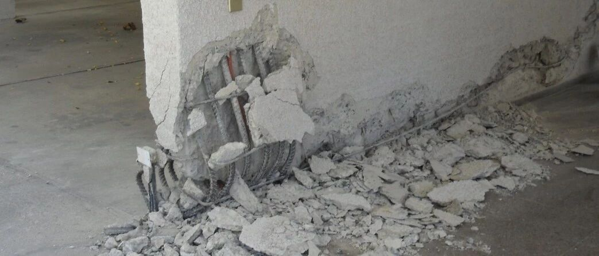

层间位移角判别准则不适用于剪力墙，怎么办？|新论文：基于曲率的剪力墙损伤评估方法
基于曲率的钢筋混凝土剪力墙损伤评估
Damage assessment of shear wall components for RC frame–shear wall buildings using story curvature as engineering demand parameter
Engineering Structures, 2019
论文链接：
https://www.sciencedirect.com/science/article/pii/S0141029618335144
引言
在我读书的时候，一位系里的前辈老师说过一个很形象的比喻：有些研究花了很大的力气去想方设法把秤杆上的刻度搞得精确一些，但是却没有关注过秤砣到底是否准确。这样最后得到的“精度提升”，可能效果并不好。
现在性能化抗震设计已经得到大家的广泛认可。一个合理的损伤评价指标对确定结构的抗震性能至关重要。长久以来，结构的层间位移角被广泛用于各种结构抗震性能的评价。很多研究论文和学术报告也就如何确定层间位移角限值，比如极限层间位移角是取1%还是2%，进行过激烈的讨论。但是，对于剪力墙构件而言，层间位移角明显是一个不合理的损伤评价指标，因为高层剪力墙的层间位移角中很大一部分是由无损伤的刚体转动贡献的，因此层间位移角大的地方（比如结构的中上部）可能反而是结构损伤小的地方。因此，提出一个合理的剪力墙构件损伤评价指标就成为非常值得深入研究的问题。
太长不看版
以剪力墙的楼层曲率作为工程需求参数，评估剪力墙各层的损伤。
（1）提出了楼层曲率的计算方法。该方法采用楼层位移作为输入，即可计算剪力墙沿高度的曲率分布。
（2）提出了剪力墙不同损伤限值的确定方法。该方法基于截面分析，能考虑墙肢轴压比、墙肢长度、配筋率等对损伤限值的影响。


看你闷闷不乐的，碰到了什么问题吗?
我最近在做基于性能的抗震设计，但是在评估高层剪力墙损伤时碰到了一些问题。高层建筑一般上部层间位移角较大，底部层间位移角较小。如果采用层间位移角作为工程需求参数，评价结果为剪力墙上部损伤严重。但剪力墙一般都是底部或者腰部损伤比较严重。


那你有没有尝试用有害层间位移角作为工程需求参数呢？有害层间位移角排除掉了墙肢刚体转动引起的无害层间位移角。
恩，试过了，但是不同损伤程度对应的有害层间位移角限值还是不好确定。我发现对于不同建筑，由于层高与墙肢长度的比例不同，损伤限值差异很大。并且即使是同一栋建筑，不同高度处轴压比不同，损伤限值差异也很大。
这样呀，我听说Engineering Structures上最近发表了一篇论文。论文采用墙肢各层的最大曲率作为工程需求参数，并采用截面分析的方法确定墙肢的损伤限值，能很好地评估剪力墙各层的损伤程度。
是吗，那我去看看。
楼层曲率的计算方法
框架剪力墙结构可以采用图1a所示计算模型，其中框架部分为剪切梁，剪力墙部分为弯曲梁。剪力墙构件的弯曲梁计算模型如图1b所示。

(a) 框架剪力墙结构计算模型

(b) 剪力墙构件计算模型
图1 框架剪力墙结构计算模型
对图1b所示的剪力墙计算模型中各层转动自由度进行自由度凝聚，则可根据各层的平动位移计算各层的转动位移，如下式所示。

获得各层的转角之后，根据两层之间的转角差与层高，确定各层的平均曲率。之后假设每一层内部曲率呈线性分布，并且已知各层的平均曲率，可以按照图2所示，确定剪力墙曲率沿高度的分布。

图2 剪力墙曲率分布
通过以上方法即可根据结构各层的侧向位移数据，较为准确地计算结构各层的最大曲率。结合下文不同损伤程度对应的曲率限值，即可评估剪力墙构件各层的损伤情况。
损伤限值的确定
本方法采用了三个结构损伤现象明显的界限作为限值，分别为：（1）墙肢出现弯曲裂缝 （2）墙肢纵筋受压或者受拉屈服 （3）边缘约束区混凝土受压压酥或者钢筋拉断。这三个限值将剪力墙划分为完好、开裂、屈服以及破坏四个损伤等级，本文将分别称作DS0，DS1，DS2，DS3。
以下基于平截面假设，可以采用截面分析的方法确定各个限值对应的曲率。
开裂限值（DS1）
达到开裂限值时，墙肢截面随着曲率的发展，受拉边缘达到混凝土拉应变。假设墙肢截面应变满足平截面假定，截面的应变分布曲线如图3所示。AB为墙肢受侧向力之后的应变分布曲线，CD为仅在轴压作用下墙肢的应变分布曲线。在侧向力作用下，应变曲线逐渐从CD变为AB。此时A点出现受拉，并且拉应变达到混凝土的峰值拉应变。根据此时的应变分布曲线，可以计算对应的墙肢开裂曲率。

图3 墙肢开裂时的截面应变分布曲线
屈服限值（DS2）
达到屈服点时，墙肢截面随着曲率的发展，受拉或者受压边缘刚刚达到钢筋的屈服应变。根据平截面假设，截面的应变以及应力分布曲线如图4所示。此时根据截面内轴力平衡条件以及力矩平衡条件，即可计算得到墙肢的屈服曲率限值。

(a) 应变分布

(b) 混凝土应力分布

(c) 钢筋应力分布
图4 墙肢屈服时的截面应力以及应变分布曲线
破坏限值（DS3）
达到破坏限值时，墙肢截面随着曲率的发展，受压边缘刚刚达到混凝土的极限压应变，或者受拉钢筋达到极限拉应变。此时截面内混凝土应力分布曲线还可以用图4b表示。钢筋应力分布则可以用图5表示。最后同样根据截面内轴力平衡条件以及力矩平衡条件，即可计算得到墙肢的破坏曲率限值。

图5 墙肢达到破坏点时的钢筋应力分布曲线
验证
单片墙体有限元模型
首先采用单片墙体纤维梁模型的计算结果作为基准，验证本文提出的损伤限值计算方法。
由于墙肢的相对受压区高度对确定墙肢曲率限值具有重要的作用。以下讨论了不同轴压比、配筋率以及钢筋强度的墙肢达到屈服点以及极限点时，截面相对受压区高度的对比结果：


图6 截面相对受压区高度对比结果
<多图，向右滑动>
以上结果显示，对于不同参数的墙肢，采用本文方法计算的相对受压区高度与有限元模型的计算结果吻合良好。此外，从模拟结果可以看出，相对受压区高度受轴压比的影响最大，其次是钢筋的强度。
整体结构有限元模型
为了验证提出的楼层曲率计算方法以及损伤限值计算方法，对下图所示20层的RC框架-剪力墙结构进行了模拟。

图7 20层RC框架-剪力墙结构示意图
对该建筑的有限元模型进行弹塑性时程分析。采用时程分析方法计算的各层侧向位移结果作为输入，根据本文方法可以计算各楼层的平均曲率。将本文方法计算的楼层平均曲率与有限元模型各层转角导出后得到的各层平均曲率对比，如图8所示。图中结果可以看出，所提出的方法能很好地预测结构的各层曲率。本文提出的曲率计算方法主要采用各层侧向位移作为输入，对于墙肢转角数据无法获取的情况具有很好的应用价值。

图8 各层平均曲率结果对比
进一步对该20层模型采用一阶以及二阶振型进行位移推覆。通过对比可以看出，采用本文方法可以较为准确的模拟墙肢的损伤情况。

(a) 一阶振型推覆

(b) 二阶振型推覆
图9 推覆分析损伤预测结果对比
对该20层结构采用不同PGA的El-Centro地震动时程记录开展了时程分析，计算得到的各层损伤结果如图10所示。计算结果显示，本文提出的方法与精细有限元模型的预测结果吻合良好。
值得注意的是，对于800gal的El-Centro地震动，本文方法不但很好地模拟了墙肢底部的DS2损伤，同时也能很好地模拟RC框架-剪力墙高层结构腰部（8-11层）由于高阶振型引起的DS2损伤。

图10 时程分析损伤预测结果对比
之后，对该20层结构采用FEMA P695推荐的22条远场地震动进行了时程分析，PGA都调整为400gal。将本文提出的方法与精细有限元模拟结果进行对比，如图11所示。本文方法的预测结果与有限元模拟结果同样吻合良好。

图11 22条远场地震动下计算和模拟的楼层损伤预测结果对比
墙片试验结果
为了验证本文所提出的剪力墙破坏曲率限值计算方法的准确性，对6片大比例剪力墙试验进行了对比分析。
试验和模拟的屈服点以及极限点曲率对比如图12所示，结果显示本文所提出的方法能很好地模拟墙肢的屈服和极限点对应的曲率限值。

图 12 试验和模拟的屈服以及极限点曲率对比
足尺振动台试验结果
本研究最后对图13所示的7层钢筋混凝土墙片足尺振动台试验进行了模拟。

图13 7层钢筋混凝土墙片足尺振动台试验示意图
该墙片在不同强度地震作用下，底部约束区的实际纵筋应变与屈服应变的比值（延性系数），如图14所示。此外根据墙片在不同地震作用下的侧向位移，计算墙肢底部的曲率与屈服曲率的比值（延性系数），如图14所示。对比结果显示，采用本文方法预测的延性系数和试验实测的延性系数吻合良好。

图14 不同地震强度下墙片底部延性系数对比

结论
为了服务于RC框架-剪力墙结构中剪力墙构件的损伤评价，解决现有方法存在的问题，本文提出了一种基于楼层曲率的损伤评价方法。
首先，提出了基于楼层侧向位移数据的楼层曲率计算方法。该方法采用结构各层的侧向位移数据作为输入，能较为方便地计算各层的楼层曲率。
其次，提出了基于楼层曲率的损伤限值确定方法，该方法采用墙肢轴压比、墙肢长度等设计信息作为输入，能较好地把握剪力墙构件各损伤等级的曲率。
最后，通过与单片墙体有限元模拟结果对比、与整体结构有限元模拟结果对比、与墙片试验对比以及与足尺振动台试验进行对比，充分验证了所提出的曲率计算方法和损伤限值计算方法的准确性和可靠性。
本研究结果期望为RC框架-剪力墙结构的性能化设计以及功能可恢复设计提供参考。

熊琛
---End---
相关研究
长按识别二维码，关注我们的科研动态